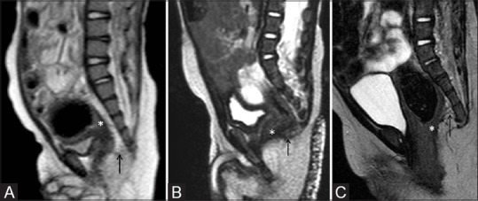
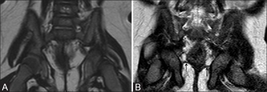
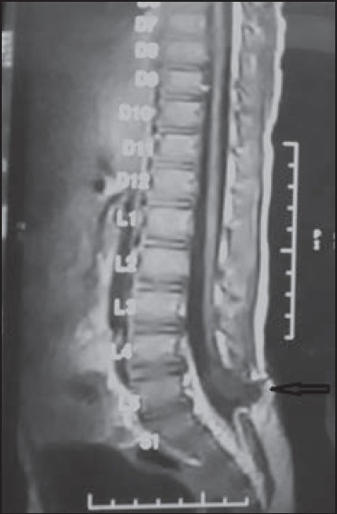
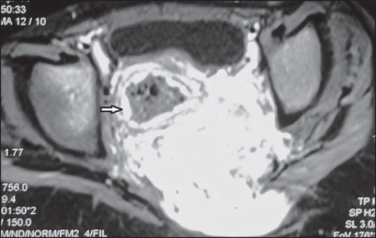
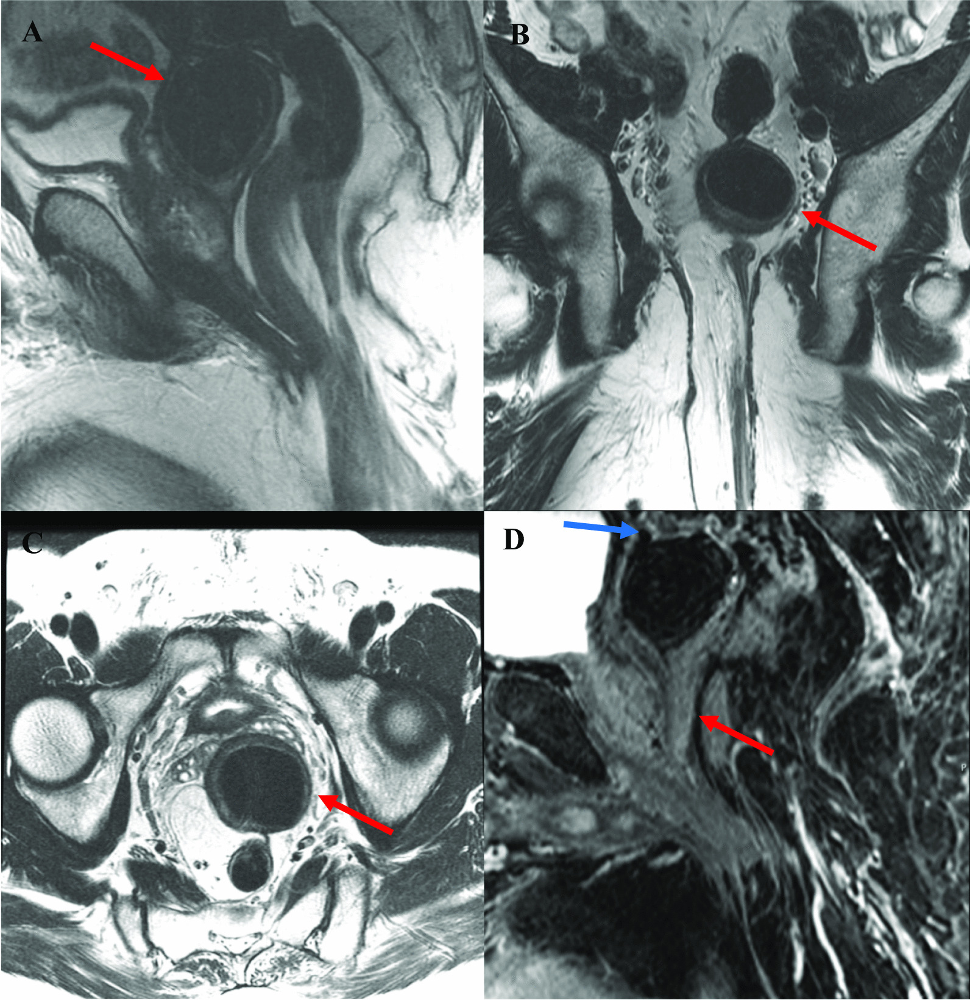

3133 — MRI sàn chậu sau mổ dị tật hậu môn–trực tràng (ARM): đọc vị trí neorectum, cơ nâng, ROOF — khi nào MRI thay được đối quang
Tags: pattern:vi-tri-neorectum pattern:gian-neorectum pattern:tui-ro-con-lai pattern:sa-truc-trang pattern:thieu-san-co-nang pattern:tuy-cang vung:hau-mon-truc-trang vung:khung-chau vung:tuy-song protocol:MRI-chau protocol:MRI-dong-hoc protocol:X-quang-doi-quang score:Krickenbeck
Mức chắc chắn (certainty): tổng hợp y văn (literature synthesis) — ghép 33 trẻ đã mổ ARM được MRI chậu đối chiếu kết cục đại tiện (J Indian Assoc Pediatr Surg 2015, PMC4481621), 30 trẻ ARM: MRI so với đối quang xa (distal colostogram) (Indian J Radiol Imaging 2018, PMC6038223), 52 trẻ mổ ARM: 20 táo bón vs 32 són, kèm MRI động học ở 18 ca (Pediatr Radiol 2013, PMID 23467755), 47 trẻ vị thành niên 12–18 tuổi: MRI tìm ROOF và bất thường chưa biết (J Pediatr Surg 2026, PMID 41690379), khuyến cáo ESPR 2022 về hình ảnh ARM (Pediatr Radiol 2022, PMC9360087) và độ dày/góc cơ nâng trên MRI (Pediatr Surg Int 2022, PMID 35235013). Không có ca do nhóm tự chụp.
Câu hỏi thực hành: bé trai 11 tuổi, mổ tạo hình hậu môn–trực tràng (PSARP) lúc 4 tháng, són phân 3–4 lần/ngày dù đã thụt và uống senna. Phim đối quang qua hậu môn nhân tạo cũ đọc "miệng nối rộng, không hẹp". Bố mẹ hỏi: có phải con tôi "không có cơ thắt" và không thể chữa? Bài chốt ba quyết định: (1) "đối quang bình thường" không loại trừ nguyên nhân cơ học — trên 33 trẻ đã mổ, 66% còn bất thường tại chỗ trên MRI và nhóm này són/táo bón nặng gấp đôi (PMC4481621); (2) MRI trả lời được ba câu mà đối quang không trả lời: neorectum có nằm trong phức hợp cơ thắt không, cơ nâng/phức hợp cơ vân phát triển bao nhiêu, và có ROOF (túi rò còn lại) hay tủy căng không — ROOF gặp 6,4% (3/47) ở tuổi 12–18, 8,9% (16/180) ở nam được chuyển đến vì són/tiểu khó (PMID 41690379, 30879755); (3) động học chỉ là "gia vị": 18/18 ca chụp MRI rặn/ép đều có sa sàn chậu, nhưng sa/trực tràng trước chỉ chiếm 6/18 — tức thuần động học hiếm khi là nguyên nhân duy nhất (PMID 23467755).
1. Tổng quan bệnh học – cơ chế hình ảnh: vì sao phải đọc neorectum và cơ nâng cùng lúc
- Bối cảnh: ARM gặp ~1/5.000 trẻ sinh sống (PMC6038223); sau mổ, tới 79% trẻ còn táo bón và/hoặc són phải vào chương trình quản lý ruột (PMC10217060). Nghĩa là MRI sau mổ là câu hỏi thường ngày, không phải chuyện hiếm.
- Giải phẫu "neorectum": ống ruột được kéo xuống xuyên qua phức hợp cơ thắt (phức hợp cơ vân — striated muscle complex, SMC gồm cơ nâng hậu môn/levator ani + cơ mu–trực tràng/puborectalis + cơ thắt ngoài). Ba biến số quyết định chức năng: (a) neorectum có nằm TRONG vòng cơ không (một bên/ra trước/ra sau = "misplaced"), (b) khối cơ còn bao nhiêu (giảm sản/thiểu sản), (c) ống có bị hẹp/giãn bất thường không (hẹp miệng nối vs megarectum).
- TẠI SAO T2 là chuỗi chủ lực — vật lý đơn giản nhưng quyết định cách đọc:
- Nước/niêm mạc/dịch trong lòng ruột sáng trên T2 → niêm mạc tăng tín hiệu là "con dấu" để nhận ra lòng trực tràng thật. Đây chính là mẹo phân biệt trực tràng với đường rò/ổ xơ: đường rò không có niêm mạc tăng tín hiệu (mô tả trong PMC6038223, hình 2).
- Cơ vân và xơ đều TỐI trên T2 → phức hợp cơ thắt hiện thành vòng tối; neorectum (thành ruột) sáng hơn ở lớp niêm. Chênh tín hiệu này là cơ sở để đo độ dày cơ nâng 1,78–2,97 mm (PMID 35235013).
- Mỡ chậu rất sáng trên T2 không xóa mỡ → dễ thấy thoát vị mỡ phúc mạc (peritoneal fat herniation) — một dấu hiệu gắn với són (P = 0,032; PMID 23467755).
- Vì sao "động học" (dynamic) khác "tĩnh": neorectum lệch nhẹ chỉ biểu hiện khi rặn/ép; sa sàn chậu, trực tràng trước, cystocele chỉ thấy khi tăng áp lực ổ bụng. Vì vậy chuỗi động học là bổ sung, không thay thế giải phẫu tĩnh: trong 18 ca được chụp động học, 18/18 có sa sàn chậu nhưng chỉ 6 trực tràng trước, 6 cystocele (PMID 23467755) — nếu chỉ có ảnh động, bạn sẽ gọi mọi trẻ són là "sa".
- Vì sao bé trai són nhiều hơn "do cơ yếu" lại có thể do cấu trúc: nhóm són khác nhóm táo bón ở vị trí neorectum bất thường (P = 0,031), góc hậu môn–trực tràng tăng (P = 0,031) và thoát vị mỡ phúc mạc (P = 0,032); nhóm táo bón thì giãn neorectum nhiều hơn (P = 0,027). Bốn con số này là bản đồ đọc phim: són → tìm lệch/góc/thoát vị; táo bón → tìm giãn/hẹp.
- Không có ngưỡng HU trong bài này (MRI); ngưỡng dùng là mm, độ, % — ghi rõ từng chỗ.
2. Mẫu hình + chẩn đoán phân biệt theo vị trí và cơ chế (Gamut)
- Mẫu hình cốt lõi: trẻ đã mổ ARM, còn són/táo bón → MRI T2 sagittal + axial + coronal → phân loại theo 5 tầng: da–hậu môn, phức hợp cơ thắt, neorectum, ổ bụng–chậu (ROOF, sa), tủy–cùng.
- Theo tầng giải phẫu:
- Hậu môn/da: hẹp da (skin-level stricture), lỗ hậu môn lệch trước/sau, sa niêm hậu môn, sẹo xơ quanh hậu môn.
- Phức hợp cơ thắt: neorectum lệch một bên (ảnh quiz ca 2), lệch ra trước, cơ nâng giảm sản (thường gặp ở thể cao), bất đối xứng cơ nâng — độ dày 1,78 ± 0,46 mm ở thể cao vs 2,97 ± 0,55 mm (thể thấp) vs 2,87 ± 0,32 mm (chứng); tỷ lệ trái:phải 0,71 vs 0,93; góc lệch cơ nâng 10,8° vs 0° (PMID 35235013).
- Neorectum: giãn > 50 mm (megarectum — gặp 8,5% ở tuổi 12–18; PMID 41690379), hẹp miệng nối, gập/xoắn ống kéo, giãn–hẹp xen kẽ.
- Ổ bụng–chậu: ROOF (túi rò còn lại) — cấu trúc dạng ống/nang nằm sau–trên tuyến tiền liệt, thành dày, T2 tối, không có niêm mạc sáng ở tâm (ảnh quiz ca 3); sa trực tràng, thoát vị mỡ phúc mạc, dính/xơ quanh trực tràng.
- Tủy–cùng: tủy căng (tethered cord) — 34% trẻ sau mổ ARM có bất thường cột sống trên MRI (PMC4481621); bất sản xương cùng, u trước cùng (Currarino, bài 1854).
- Gamut "són phân sau mổ ARM": neorectum lệch ngoài cơ thắt, ROOF, thiểu sản cơ nâng, tủy căng, sa trực tràng, megarectum với ứ tràn, rối loạn nhu động (không thấy trên MRI), hẹp miệng nối gây ứ tràn.
- Gợi nhớ PELVIS: Position (vị trí neorectum) · Excavation (cơ nâng/SMC) · Leak & ROOF · Volume (calibre neorectum) · Intraspinal (tủy/cùng) · Skin & stricture (hậu môn).
3. Bảng so sánh phân biệt (ma trận đối chiếu)
| Thực thể (entity) | Hình ảnh điển hình trên MRI T2 (± động học) | Chốt vào (rule-in) | Chốt loại (rule-out) | Gợi ý xác nhận |
|---|---|---|---|---|
| Neorectum lệch ngoài phức hợp cơ thắt | Trục neorectum lệch hẳn một bên vòng cơ tối (axial); góc hậu môn–trực tràng tăng; có thể kèm thoát vị mỡ phúc mạc | Trục ống không nằm trong vòng cơ tối ở ≥ 2 bình diện | Ống nằm giữa vòng cơ ở axial + coronal → loại lệch | Đối chiếu axial–coronal–sagittal; so với mốc đường mu–cụt (PCL) |
| ROOF (túi rò còn lại) | Cấu trúc dạng ống/nang sau–trên tuyến tiền liệt, thành dày T2 tối, không có niêm mạc sáng ở tâm, có thể dính bàng quang/sigma | Cấu trúc dạng ống không có niêm mạc sáng, nằm giữa trực tràng và niệu đạo | Có niêm mạc tăng tín hiệu ở tâm + thông với lòng trực tràng → là trực tràng/ống kéo, không phải ROOF | Sagittal T2 mỏng + axial; đối chiếu niệu đạo sau trên VCUG |
| Megarectum do ứ tràn | Neorectum giãn > 50 mm, đầy phân (tín hiệu hỗn hợp), cơ nâng mỏng nhưng liên tục | Đường kính > 50 mm + ứ phân + són giữa các lần thụt | Calibre bình thường, không ứ phân → loại giãn | Đo đường kính ngang lớn nhất trên axial; X-quang bụng |
| Hẹp miệng nối / hẹp ống kéo | Chỗ thắt < 8 mm ở miệng nối, giãn phía trên; không có vòng xơ ngoài lòng | Chỗ thắt khu trú + giãn trên | Calibre đều, không chênh → loại hẹp | Đối quang/calibration; MRI chỉ định vị |
| Thiểu sản/bất đối xứng cơ nâng | Cơ nâng mỏng (< 2 mm), tỷ lệ trái:phải < 0,8**, **góc lệch > 6° | Cơ mỏng + bất đối xứng + thể ARM cao | Cơ dày ≥ 2,5 mm, đối xứng, góc 0–5° → loại | Đo trên axial/coronal 2 mm (PMID 35235013) |
| Tủy căng (tethered cord) | Tủy tận thấp dưới L2–L3, dày > 2 mm, mỡ/điểm bám bất thường | Tủy tận thấp + bó tận bất thường | Tủy tận ngang L1–L2, hình dạng bình thường → loại | Sagittal T1/T2 toàn cột cùng; siêu âm ở trẻ < 6 tháng |
| Rối loạn nhu động/không tuân thủ | Giải phẫu bình thường, không hẹp/không lệch; có thể ứ phân lan tỏa | MRI giải phẫu bình thường + manometry bất thường | Có bất thường giải phẫu rõ → không quy cho nhu động | Manometry hậu môn–trực tràng; đánh giá tuân thủ |

*Đọc mức túi trực tràng (*) so với sàn chậu (mũi tên) — nền tảng để hiểu "vị trí neorectum" sau mổ: (A) thể cao, (B) thể trung gian, (C) thể thấp (trực tràng mở vào tiền đình). Trên loạt 30 trẻ, MRI xác định đúng mức túi 93,33% so với 76,9% của đối quang xa (PMC6038223) — đây là lý do MRI được ưu tiên khi câu hỏi là "vị trí", còn đối quang vẫn tốt hơn cho hình thái đường rò. Nguồn: Indian J Radiol Imaging 2018 (PMC6038223), CC BY-NC-SA 4.0.*
Đánh giá cơ nâng hậu môn theo chủ quan (kém/tốt) tương quan có ý nghĩa với đánh giá của phẫu thuật viên (P = 0,008 với cơ nâng; P = 0,024 với cơ mu–trực tràng; PMC6038223). Khi cần định lượng: đo độ dày 1,78 vs 2,97 mm và góc lệch 10,8° vs 0° (PMID 35235013) — hữu ích để tiên lượng trước khi quyết định mổ lại. Nguồn: Indian J Radiol Imaging 2018 (PMC6038223), CC BY-NC-SA 4.0.4. Protocol chụp + ngưỡng xử trí
- Chỉ định MRI sau mổ (4 nhóm): (1) són/táo bón không đáp ứng chương trình quản lý ruột; (2) nghi ROOF (nhiễm niệu tái diễn, chảy mủ qua niệu đạo, đau vùng chậu); (3) nghi hẹp/gập ống kéo mà đối quang không giải thích; (4) trước mổ lại (redo PSARP) để lập bản đồ.
- Chuẩn bị — "feed and wrap" thay vì gây mê (khuyến cáo ESPR 2022, PMC9360087): trẻ nhỏ cho ăn rồi quấn để ngủ tự nhiên, KHÔNG cần bơm căng đại tràng bằng nước muối, KHÔNG cần thuốc an thần; các phương pháp "modified MRI" (bơm nước muối qua colostogram + an thần) đã bị thay thế vì không thêm thông tin. Nếu trẻ không hợp tác → an thần có kiểm soát vẫn tốt hơn phim mờ (loạt 30 trẻ dùng an thần, PMC6038223).
- Thông số tối thiểu (theo nguồn có sẵn):
- Sagittal T2 (3 mm) toàn khung chậu + axial/coronal T2 2 mm vuông góc trục ống và song song đường mu–cụt (PCL) (PMID 35235013).
- T1 (2–3 mm) để phân biệt mỡ (sáng T1) với dịch/xơ (tối T1) trong ROOF và u trước cùng.
- Không cần tiêm thuốc cản quang cho câu hỏi giải phẫu thông thường; T1 sau tiêm + xóa mỡ chỉ khi nghi áp-xe/viêm hoạt động hoặc u.
- Động học (MRI defecography) khi câu hỏi là sa/trực tràng trước/không tống được phân: chuỗi nhanh sagittal giữa lúc nghỉ → ép → rặn (kinh điển MR defecography; nguồn trong bài không nêu chi tiết chuỗi — ghi rõ đây là thực hành chung, cần kiểm tra theo máy). Cần trực tràng có phân/gel mới đánh giá được — bẫy lớn nhất là trực tràng rỗng.
- Trình tự quyết định sau khi có MRI:
flowchart TD
A[Tre ARM da mo, con son hoac tao bon] --> B[Kham + danh gia tuan thu + thu thut]
B --> C{Da toi uu the tich thut ma con trieu chung?}
C -->|Chua| D[Toi uu the tich/thoi gian giu + theo doi 4-6 tuan]
C -->|Roi| E[MRI chau T2 sagittal + axial + coronal]
E --> F{Co ROOF, hep, gap hoac tuy cang?}
F -->|Co| G[Mo lai / giai quyet nguyen nhan cu the]
F -->|Khong| H{Neorectum lech ngoai co that?}
H -->|Co| G
H -->|Khong| I{Co gian > 50 mm + u phan?}
I -->|Co| J[Megarectum: tang the tich thut, can nhac cat bot dai trang]
I -->|Khong| K[Manometry + danh gia nhu dong / tam ly]
K --> L[Dieu tri theo chuc nang, khong mo]
- Ngưỡng thực hành (mỗi số gắn nguồn):
| Ngưỡng | Giá trị | Ý nghĩa |
|---|---|---|
| Đường kính neorectum | > 50 mm = giãn (8,5% ở 12–18 tuổi, PMID 41690379) | Tìm ứ tràn; cân nhắc tăng thể tích thụt/cắt bớt |
| Độ dày cơ nâng | < 2 mm / tỷ lệ trái:phải < 0,8** / góc **> 6° | Thiểu sản–bất đối xứng (PMID 35235013) |
| ROOF | 6,4% ở 12–18 tuổi; 8,9% ở nam chuyển đến | Nếu có triệu chứng niệu → chỉ định cắt (PMID 41690379, 30879755) |
| Bất thường cột sống sau mổ | 34% | Luôn đọc toàn cột cùng trên cùng buổi chụp (PMC4481621) |
| Tủy tận | Dưới L2–L3 | Nghi tủy căng → MRI toàn cột + hội chẩn ngoại thần kinh |
- Khi nào MRI KHÔNG thay được đối quang: câu hỏi "đường rò đi đâu, có hẹp không, đại tràng dài bao nhiêu" vẫn cần đối quang/đối quang xa; MRI 76,6% đúng về hiện diện rò nhưng chỉ 76% đúng về giải phẫu rò, trong khi đối quang xa đúng 76,9% và 65% (PMC6038223) — hai phương thức bổ sung, không thay thế.
5. Biến thể bình thường và cạm bẫy
- "Cơ thắt không thấy" trên một lát axial: phức hợp cơ vân không phải vòng tròn hoàn hảo, lại bị cắt xiên do ống kéo chéo; phải xem 3 bình diện + tái tạo song song PCL trước khi kết luận thiểu sản.
- Neorectum rỗng trông như "dải xơ": khi không có phân/dịch, thành ruột dính vào nhau, mất "dấu niêm mạc sáng"; đừng kết luận teo/hẹp — cho trẻ nhịn thụt 12–24 giờ hoặc dùng gel trực tràng trước chụp.
- Nhầm ROOF với trực tràng: chốt phân biệt là niêm mạc tăng tín hiệu ở tâm — ROOF không có (PMC6038223); nếu thấy niêm mạc sáng nối liền lòng trực tràng thì đó là ống kéo, không phải túi rò.
- Nhầm ROOF với bàng quang/niệu đạo sau: ROOF nằm sau–trên tuyến tiền liệt, thành dày; bàng quang thành mỏng, chứa nước. Luôn đọc cùng VCUG khi có triệu chứng niệu.
- Sa sàn chậu là bình thường khi rặn mạnh: 18/18 ca chụp động học đều có sa sàn chậu (PMID 23467755) — chỉ có giá trị khi kèm triệu chứng hoặc khi sa vượt quá mức sinh lý; đừng biến một nghiệm pháp rặn thành chẩn đoán.
- Bỏ sót tủy căng vì "chỉ chụp khung chậu": 34% có bất thường cột sống (PMC4481621) — luôn đặt field-of-view đến cùng–cụt; nếu không, phải chụp bổ sung.

Tủy căng (tethered cord): tủy tận thấp (đầu mũi tên) — tổn thương không gây són trực tiếp nhưng làm nặng thêm rối loạn đại tiện–tiểu tiện và thay đổi kế hoạch mổ (tháo căng tủy trước/đồng thời). Vì 34% trẻ sau mổ ARM có bất thường cột sống (PMC4481621), đây là mục bắt buộc trong báo cáo, không phải "phát hiện phụ". Nguồn: J Indian Assoc Pediatr Surg 2015 (PMC4481621), CC BY-NC-SA 3.0.- Không hợp tác → phim rung: chẩn đoán "hẹp" trên phim rung là lỗi thường gặp; an thần hoặc lặp lại rẻ hơn nhiều so với mổ lại oan.
- Thỏa mãn tìm kiếm: đã thấy ROOF vẫn phải đọc cơ nâng, calibre, tủy — ca redo thường có ≥ 2 bất thường (13/16 ca ROOF có thêm lý do mổ lại như hậu môn lệch hoặc sa trực tràng; PMID 30879755).
6. Tự lượng giá — Blind Quiz
Ca 1 — Bé 4 tháng, ARM thể trung gian, trước mổ. Nhìn 3 ảnh sagittal, xác định mức túi trực tràng.
- Gợi ý lâm sàng: không có lỗ hậu môn bình thường, có rò niệu.
- Câu hỏi: (1) Mốc giải phẫu dùng để xếp mức? (2) Vì sao mức này quyết định kỹ thuật mổ? (3) Đối quang xa hay MRI đúng hơn về mức túi?
Bấm để hiện đáp án (findings + chẩn đoán)
- Dấu hiệu: túi trực tràng (*) — nhận ra nhờ niêm mạc tăng tín hiệu — so với sàn chậu/cơ nâng (mũi tên): (A) trên sàn chậu → thể cao; (B) ngang sàn → trung gian; (C) dưới sàn → thể thấp.
- Vì sao quan trọng: thể cao/trung gian cần đường vào bụng hoặc sau trực tràng (PSARP/LAARP), thể thấp có thể mổ đường tầng sinh môn; mức túi còn quyết định có phải làm hậu môn nhân tạo.
- Đúng hơn: MRI 93,33% vs đối quang xa 76,9% về mức túi (PMC6038223).
- Nguồn ảnh: Indian J Radiol Imaging 2018 (PMC6038223), CC BY-NC-SA 4.0.
Ca 2 — Bé trai 8 tuổi đã PSARP, són phân. Axial T2 qua phức hợp cơ thắt.

- Câu hỏi: (1) Bất thường chính? (2) Vì sao bất thường này gắn với són hơn là táo bón? (3) Có cần mổ lại ngay không?
Bấm để hiện đáp án
- Dấu hiệu: neorectum (đầu mũi tên) lệch hẳn sang PHẢI vòng cơ thắt (vòng tối bao quanh), tức ống không nằm giữa phức hợp cơ vân.
- Vì sao són: nhóm són có vị trí neorectum bất thường P = 0,031, góc hậu môn–trực tràng tăng P = 0,031, thoát vị mỡ phúc mạc P = 0,032 (PMID 23467755); nhóm táo bón thiên về giãn neorectum (P = 0,027).
- Chưa mổ ngay: trước hết tối ưu thụt + đánh giá cơ nâng/tủy căng; chỉ mổ lại khi lệch đủ lớn + thất bại điều trị nội (nhóm mổ lại trong loạt tham chiếu là abdominoperineal pull-through — nhóm có nhiều bất thường tại chỗ nhất, P = 0,0001; PMC4481621).
- Nguồn ảnh: J Indian Assoc Pediatr Surg 2015 (PMC4481621), CC BY-NC-SA 3.0 — nguyên bản.
Ca 3 — Nam 44 tuổi, tiền sử mổ imperforate anus lúc nhỏ, nay nhiễm niệu tái diễn + sa trực tràng. MRI chậu.

- Câu hỏi: (1) Cấu trúc mũi tên đỏ là gì? (2) Ba chẩn đoán phân biệt? (3) Vì sao bệnh nhân này cần mổ chứ không theo dõi?
Bấm để hiện đáp án
- Dấu hiệu: cấu trúc dạng ống/nang thành dày, T2 tối, nằm sau–trên tuyến tiền liệt, dính sigma phía trên và có đường hướng tới niệu đạo sau — không thấy niêm mạc sáng ở tâm như lòng trực tràng.
- Chẩn đoán: ROOF (di tích đường rò niệu đạo–trực tràng còn lại) — trước đây gọi là túi thừa niệu đạo sau (posterior urethral diverticulum), kèm sa trực tràng (mô tả trong chính ca này).
- Phân biệt: (a) ống kéo/neorectum (có niêm mạc sáng, thông lòng), (b) nang tuyến tiền liệt/túi tinh, (c) áp-xe vùng chậu.
- Vì sao mổ: ROOF gây nhiễm niệu tái diễn, chảy mủ qua niệu đạo, sỏi trong túi; trong loạt 180 nam chuyển đến, 16 ca (8,9%) có ROOF và 14 ca được mổ (tuổi mổ trung bình 4,2 tuổi; PMID 30879755). Ở người lớn, ROOF tồn tại hàng chục năm — đây là lý do không được "quên" khi trẻ chuyển sang người lớn.
- Nguồn ảnh: J Med Case Rep 2021 (PMC8281626), CC BY 4.0.
Bài liên quan chéo
- 3100 – Quản lý ruột & kiểm soát đại tiện sau mổ ARM
- 3132 – Biến chứng lỗ thông ACE sau mổ
- 3075 – Dị tật hậu môn–trực tràng ở sơ sinh
- 1779 – Hẹp miệng nối sau kéo trực tràng
- 1867 – Táo bón & ứ phân sau kéo trực tràng
- 1854 – Màng não tủy trước cùng & tam chứng Currarino
Ảnh
images/3133_mri-dong-hoc-arm_T2-sagittal_IJRI2018-PMC6038223.jpg— Indian J Radiol Imaging 2018 (PMC6038223), CC BY-NC-SA 4.0.images/3133_mri-dong-hoc-arm_T2-coronal_IJRI2018-PMC6038223.jpg— Indian J Radiol Imaging 2018 (PMC6038223), CC BY-NC-SA 4.0.images/3133_mri-dong-hoc-arm_T2-axial_IJAPS2015-PMC4481621.jpg— J Indian Assoc Pediatr Surg 2015 (PMC4481621), CC BY-NC-SA 3.0.images/3133_mri-dong-hoc-arm_T2-tuy_IJAPS2015-PMC4481621.jpg— J Indian Assoc Pediatr Surg 2015 (PMC4481621), CC BY-NC-SA 3.0.images/3133_mri-dong-hoc-arm_T2-roof_JMedCaseRep2021-PMC8281626.jpg— J Med Case Rep 2021 (PMC8281626), CC BY 4.0.- Nguồn, giấy phép và ghi chú từng ảnh:
images/CREDITS.md.
Không dùng để chẩn đoán độc lập khi chưa có người hướng dẫn.